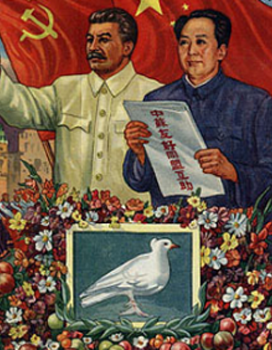

Cliquez sur le bouton pour écouter le discours de Mao sur la fondation de la RPC

En 1949, quand Mao proclame la RPC, le pays n’est reconnu officiellement que par les autres pays communistes. Les pays comme USA, FR… Ne reconnaissent pas ce pays comme légitime. Néanmoins, le chef des nationalistes, Jiang Jieshi (Tchang Kaï Chek), avec une partie de ses troupes, réussi à fuir et trouve refuge sur l’île de Taïwan. Cela veut dire que les nationalistes vont s’installer sur l’île de Taïwan. Et à Taïwan, le chef du gouvernement décide de proclamer lui aussi président de la RPC, alors que Mao proclame être le président légitime de Chine. Tous les deux disent être le représentant de la Chine.
En 1949, il y a deux chines : celle de Jiang Jieshi, la République de Chine (groupée sur Taiwan) et celle de Mao, la RPC.
Pour la RPC, il faut s’allier avec l’URSS sinon c’est l’isolement total.
De ce fait, en 1950, la Chine de Mao signe une alliance avec l’URSS.
La RPC ne va pas juste s’allier à l’URSS, mais va le prendre comme modèle. En effet, la Chine se déclare être officiellement une « démocratie populaire ». Cette RPC calque son modèle sur le modèle soviétique avec un Régime totalitaire (1 seul parti (communisme), 1 seul chef et le culte de la personnalité (notamment celle de Mao), une économie contrôlée (fin de la propriété privée, nationalisation des entreprises et des usines, industrialisation avec surtout l’industrie lourde, collectivisation des terres, la planification avec 1er plan quinquennal 1953-1957), création d’un « homme nouveau » (c’est idée de créer le partisan communiste idéal), la répression (exécutions massives, sanctionner tout ce qui est contre le régime, utilisation d’une police politique), population contrôlée et embrigadée (soutien des masses avec notamment de la censure, propagande, contrôle des médias/éducation/syndicats/organisations de jeunesse…).
Un régime totalitaire se met donc en place en Chine.
Sauf que Mao va faire sa propre variante : en 1958, Mao lance un programme éco qu’il appelle « le grand bond en avant » (ce programme a duré presque 30 ans).C’est une politique de développement éco marquée par une accélération de la collectivisation des terres et une industrialisation des campagnes.
Mais ce programme va désorganiser les campagnes et les paysans qui vont devoir être à la fois au champ et à l’usine vont être épuisés et ne vont plus réussir à produire assez (+ trop forte taux de natalité), alors une terrible famine arrive (plusieurs dizaines de millions de morts).
Mais en 1966, Mao est fortement critiqué (avec le grand bond en avant) au sein même de son parti. Il a alors besoin de légitimité. Arrive alors « la révolution culturelle » : Il va s’appuyer sur les étudiants prêts à le soutenir en leur donnant les moyens de se débarrasser de ses opposants -> humiliations, exécutions, fermer écoles, humilier les intellectuels : épurer le monde politique et intellectuel. Ensuite, Mao va utiliser l’armée pour calmer les étudiants.
Au final, l’alliance avec l’URSS n’a été que de courte durée.
Les explications de cette rupture sont diverses. Il y a tout d’abord des tensions concernant leurs frontières communes (la chine et l’URSS ont des frontières communes mais il arrive qu’ils ne soient pas d’accord).
De plus, la RPC reproche à son allié de ne pas lui apporter toute l’aide nécessaire pour se développer (Mao reproche à l’URSS de ne pas lui apporter toute l’aide promise en 1950 -> ils dépendent toujours de l’URSS) (Mao aimerait la bombe atomique).
Mais aussi car il y avait des divergences idéologiques (surtout après la mort de Staline en 1953 : en 1956, un nouveau secrétaire du parti communiste est nommé (Khrouchtchev), mais cela ne va pas bien se passé entre lui et Mao. Khrouchtchev (il se lance dans une déstalinisation et critique le culte de la personnalité autour de Staline) dénonce les dérives du culte de la personnalité, or Mao possède ce culte de la personnalité + Khrouchtchev parle de la période de « détente » dans la Guerre Froide (période où les tensions entre Américains et URSS : pour Mao, il est hors de question d’abandonner la lutte vs impérialiste). Mao n’est pas d’accord et refuse d’abandonner la lutte contre le « camp impérialiste » et va alors se rapprocher des pays du Tiers-Monde pour se présenter comme le leader communiste. Enfin, il y avait une tension liée à l’attitude de la RPC face aux pays du Tiers Monde (= pays en développement). La chine se montre solidaire des pays du Tiers Monde, notamment des pays qui veulent leur indépendance. Or, la RPC va intégrer les « non alignés ».
En 1955, la RPC participe à la conférence de Bandung (qui réunie des pays Africains et Asiatiques). Cette conférence regroupe tous les pays fraichement décolonisés et qui veulent leur indépendance. La Chine est invitée, pourtant ce n’est pas une colonie, mais celle-ci veut s’affirmer, créer des liens, s’imposer comme l’un des pays leader du Tiers Monde + lutte VS l’impérialisme des puissances occidentales. Cette conférence à aussi un autre but (1er but : promouvoir la décolonisation) : créer une troisième « voix/voie » : une troisième puissance et en même temps un troisième chemin. Ils vont alors créer le mouvement des « non-alignés ».
| Dates | Événement |
| 1962 | Conflits armés avec l'Inde pour des questions de frontières. |
| 1964 | Obtention de la bombe atomique par la RPC. |
| 1965-1973 | Intervention dans la guerre du Vietnam où Mao Zedong envoie des centaines de millier de volontaires pour soutenir les Vietnamiens communistes contre les USA. |
| 1969 | Combat contre l'URSS pour des questions de frontières. |
| 1975 | La RPC soutient le mouvement des khmers rouges au Cambodge. |
| Dates | Événement |
Si tu veux t'entrainer c'est par ICI !